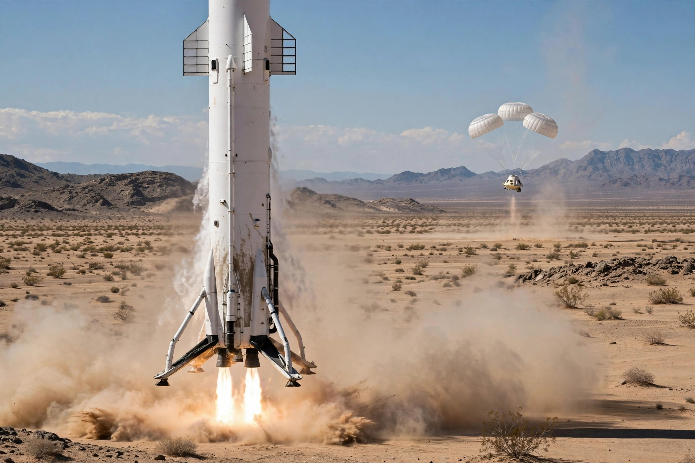

Blue Origin
From Wikipedia, the free encyclopedia
| Blue Origin | |
|---|---|
| Founded | 2000 (Jeff Bezos) |
| Headquarters | Kent, Washington |
| Vehicles | New Shepard, New Glenn |
| Motto | Gradatim Ferociter — step by step, ferociously |

New Shepard's booster returns.Blue Origin, LLC is an American aerospace company founded in 2000 by Jeff Bezos to lower the cost of spaceflight through reusable rockets, working — per its Latin motto Gradatim Ferociter — "step by step, ferociously". For its first decade it operated in near-secrecy before emerging with the suborbital New Shepard, which flies tourists and experiments above the Kármán line from West Texas, and the heavy orbital New Glenn rocket.
Bezos, who has said he founded Blue Origin to help build the road to space for future generations, funds it largely through Amazon stock sales of roughly a billion dollars a year. The company also builds the BE-4 engines that power United Launch Alliance's Vulcan rocket, and its Blue Moon lander was selected by NASA in 2023 as the second Artemis crewed lunar lander.
Rivalry
Blue Origin's methodical pace contrasts with SpaceX's public iteration; the two firms have contested — in bids, patents and courts — lunar lander contracts, launch pads and engine deals. New Shepard's capsule, named for Alan Shepard, and booster recoveries from 2015 onward made Blue the second company to land an orbital-class-adjacent booster vertically, and its passenger flights (beginning with Bezos himself in July 2021) opened the suborbital tourism market alongside Virgin Galactic.